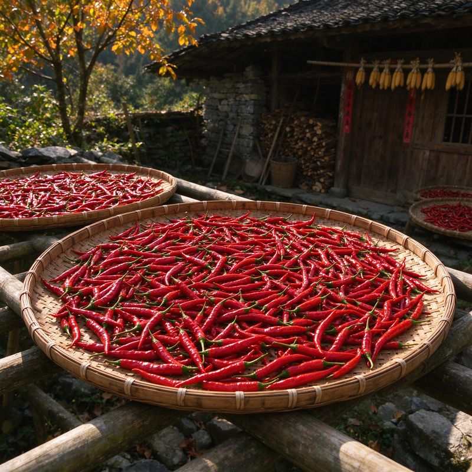

辣椒自明代传入中国后，在贵州这片土地上找到了最契合的归宿。贵州气候湿润多雨，当地先民为了保存辣椒，逐渐摸索出了腌制发酵的方法，糟辣椒由此诞生。
"三天不吃酸，走路打蹿蹿。" —— 贵州民谚

秋日农家晒辣椒，是贵州乡村最具仪式感的时节
糟辣椒的历史可追溯至清代，距今已有数百年。在物资匮乏的年代，一坛糟辣椒是农家餐桌上最重要的味道来源。每年秋收时节，家家户户挑选最红最亮的辣椒，全家上阵剁辣椒、装坛子，成为贵州乡村最具仪式感的民俗场景。
如今，糟辣椒已从农家灶台走向全国，成为黔菜最具代表性的符号之一。但在贵州人心中，最地道的味道，永远是外婆亲手剁的那一坛。